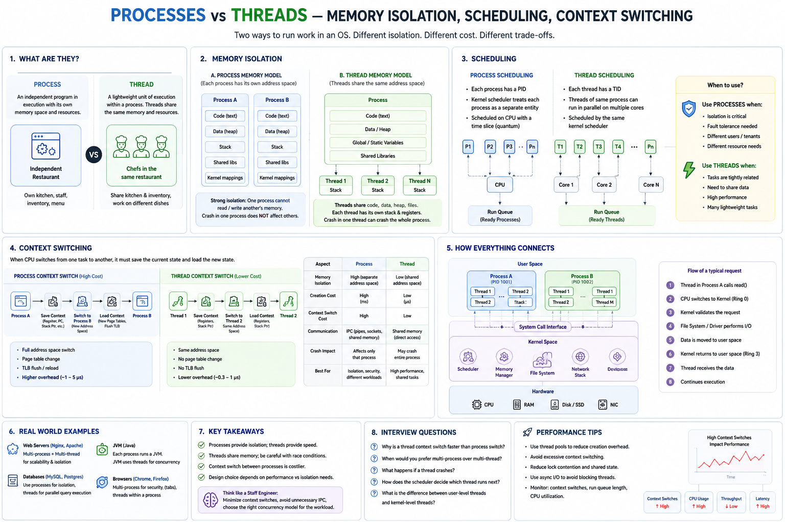

Memory Isolation • Scheduling • Context Switching • Fault Isolation • IPC
Core Idea
Modern apps need concurrency — a web server handles thousands of users, a DB runs queries in parallel, a browser loads pages while downloading files. The OS provides two execution models to achieve this.
Process
An independent program in execution. Owns its own memory, file descriptors, and security context. Like an independent restaurant — its own kitchen, staff, and inventory.
Thread
A lightweight execution unit inside a process. Shares code, heap, and files with siblings. Like chefs in the same restaurant — shared kitchen & inventory, but working different dishes.
The trade-off is always Isolation vs Performance. Processes give you safety. Threads give you speed.
What a Process Owns
Completely separate memory spaces. Process A cannot read or write Process B's memory. Period.
What a Thread Shares vs Owns
Same address space = fast communication, but also shared fate. One thread's bug can corrupt everyone's heap.
Memory Isolation — The Biggest Architectural Difference
Process Memory — Strong Isolation
Thread Memory — Shared Address Space
Scheduling & Context Switching
The CPU cannot run every task simultaneously. The kernel scheduler decides who runs next by assigning each thread a time slice (quantum), priority, and CPU affinity. In Linux, threads are the actual scheduling entities — a process with 4 threads gets 4 scheduler entries.
Process Context Switch — High Cost (~1–5 µs)
Thread Context Switch — Low Cost (~0.3–1 µs)
Context switching is pure overhead — no business logic executes during a switch. Excessive context switches = high CPU, high latency. Monitor with vmstat, perf, or htop.
Communication
Between Processes (IPC)
Safe but involves kernel crossings. Slower than thread communication by orders of magnitude.
Between Threads
Extremely fast — but you must synchronize. No sync = race conditions.
Failure Isolation
Process Failure
Chrome uses this — a crashed tab kills that process only.
Thread Failure
A segfault in any thread brings down the JVM. Design carefully.
Real-World Architecture Choices
| System | Model | Why |
|---|---|---|
| Chrome / Firefox | Multi-process (per tab) | One crashed tab must not crash the browser |
| JVM / Java Apps | Single process + many threads | Threads share heap; cheaper than spawning JVMs |
| Nginx | Multi-process workers | Fault isolation; each worker handles many connections |
| PostgreSQL | Multi-process per connection | Security isolation between DB sessions |
| Kafka Broker | Single process + many threads | Shared memory gives higher I/O throughput |
| Redis | Single process, event loop | Single-threaded for simplicity; no lock contention |
| Node.js | Single process + libuv threads | Async I/O via event loop; worker threads for CPU |
Staff Engineer Decision Framework
| Need | Choose |
|---|---|
| Strong isolation | Process |
| Better security / multi-tenant | Process |
| Crash containment | Process |
| Fast shared-memory communication | Thread |
| High concurrency, low overhead | Thread |
| Shared computation / caches | Thread |
| Low memory usage | Thread |
Performance Comparison
| Feature | Process | Thread |
|---|---|---|
| Address space | Separate | Shared |
| Memory isolation | High | Low |
| Context switch cost | ~1–5 µs | ~0.3–1 µs |
| Startup time | Slow (ms) | Fast (µs) |
| Memory usage | High | Low |
| Communication | IPC (kernel) | Shared mem |
| Crash impact | Local only | Entire process |
| Synchronization | Not needed | Required |
Engineer Progression
Junior
"I need concurrency."
Senior
"Should I use multiple threads or processes?"
Staff
"Do I optimize for isolation or throughput? What fails if a thread crashes? How many context switches happen per request?"
Principal
"Can I redesign to reduce synchronization entirely? Can async I/O eliminate the thread-per-connection model?"
Common Production Fixes
High CPU — Excessive Context Switching
Reduce thread count. Use async I/O. Batch work. Target threads = CPU cores for CPU-bound work.
Shared Variable Corruption / Race Condition
Introduce mutex or use atomic operations. Prefer lock-free structures for hot paths.
Worker Crashes Killing the App
Move unreliable workloads into separate processes. Use supervisors (systemd, PM2) for restart.
Observability Tools
vmstat — context switches/sec • perf — CPU time per thread • htop — thread view • strace -p — syscalls per thread
Interview Cheat Sheet
Principal Engineer Takeaway
Processes — strong isolation, separate memory, local crash impact
Threads — shared address space, fast comms, lightweight switches
Scheduler — allocates CPU time to threads via time slices and priority
Trade-off — Isolation vs Performance. There is no universally correct answer.
The core architectural trade-off is Isolation vs Performance: choose Processes when safety and reliability matter, and Threads when throughput, shared memory, and low overhead are more important. The kernel scheduler sees threads — design your concurrency model around minimizing context switches and synchronization overhead.
